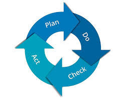

Más allá de una visita. Un compromiso integral que abarca desde la certificación ambiental hasta la educación de cada visitante.
Nuestra base: La norma ISO 14001:2015
Aplicamos la metodología PDCA (Planificar, Hacer, Verificar, Actuar) para asegurar que nuestro impacto en el Parque Nacional disminuya año tras año.
No es solo una certificación, es nuestra forma de operar. Analizamos el Contexto de la Organización y evaluamos riesgos y oportunidades en un entorno de máxima protección.
Identificamos aspectos ambientales significativos: emisiones, vertidos y consumo de recursos antes de que ocurran.
La alta dirección define la política ambiental, asegurando recursos y competencia del personal.
Auditorías internas y revisión por la dirección para garantizar el cumplimiento legal y la mejora.
La excelencia en el servicio se une al respeto por el entorno.
Estudia el PRUG y la normativa. Informa con rigor sobre zonas de reserva y senderos permitidos.
Apaga el motor en paradas de más de 1 minuto. Usa marchas largas para reducir ruido y emisiones.
Protege la calidad del cielo nocturno. Usa linternas de baja intensidad y apunta siempre al suelo.
El agua y la energía en el Teide son escasas. Limita su uso a lo estrictamente indispensable.
Promueve la filosofía "llévate tu basura". Si se genera, usa los contenedores de selectiva.
Prohibido alimentar lagartos o llevarse piedras. Somos meros observadores de un ecosistema frágil.
Anticípate a los cambios de clima. La seguridad del cliente es la base de una buena experiencia.
Promociona el producto Km 0 (papas, gofio, vinos). La gastronomía es parte del paisaje.
Cuida las instalaciones (baños, refugios) y colabora con compañeros. Eres parte de una cadena.
Tu actitud, uniforme e idioma son la carta de presentación de Volcano Teide Experience.
Impactamos en cada etapa de la visita para generar conciencia.
Preparamos al visitante antes de su llegada con información clave.
Herramientas in situ para minimizar el impacto y maximizar la experiencia.
Fidelización y extensión del mensaje de conservación.
Separación correcta según la Ley 7/2022 y RD 1055/2022.
En España se generan 106 millones de toneladas de residuos.
De estos, 3.3 millones son peligrosos. La correcta segregación es vital para alcanzar el objetivo europeo del 50% de reciclaje.